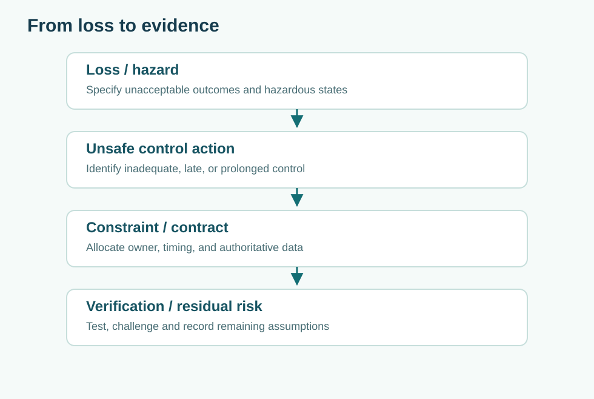

Human factors: design for decisions made under pressure
Core Concepts · Human systems · T14
Model the joint human–automation system, alarm workload, cognitive bias, and authority handoff.
Recommended preparation: 01 Boundaries, 05 Software Contracts
Related companion books: Book 1, Book 5, Book 20

1. The human operator is part of the controlled system
Human factors is not a cosmetic usability review at the end of engineering. In a mobility operations center, the operator must detect abnormal situations, interpret competing evidence, choose an intervention, and confirm that the commanded action had an effect. The interface and organization shape those abilities. An unreadable timestamp, an ambiguous “override” button, or a procedure that demands two simultaneous approvals are all design decisions that affect system performance.
Start with work analysis, not screen sketches. Identify the decisions the operator must make, the information available at each moment, the consequences of delay, and which actor has authority. Model routine dispatch separately from a road closure, medical incident, or data conflict. A design that performs well during steady state may fail when the operator must handle three events at once.
2. Distinguish data, information, and situation awareness
A display with twelve timestamps is rich in data. It may convey little useful information unless the user can answer: “What has changed?”, “What is trustworthy?”, and “What will happen if I do nothing?” Situation awareness is often described through perception, comprehension, and projection. Engineers should translate these into observable tasks rather than claiming to have “optimized awareness.”
For example, a status tile might say Zone feed: ONLINE. That tells the operator the network connection exists, not whether the content is recent or internally consistent. Replace it with a revision and age indicator, an explicit confidence state, and the expected effect on dispatch permissions. The difference is operational semantics, not visual decoration.
3. Model alarms as a constrained attention system
If every anomaly triggers a high-priority alert, priority loses meaning. An alarm should represent an actionable condition, have an owner, and include the system state needed to make a decision. Alarm floods can interact with fatigue and confirmation bias: the operator sees many benign events, starts dismissing warnings, and misses a novel high-consequence pattern.
Queueing mathematics can offer an intuition, not a complete cognitive model. Suppose an operator can investigate eight alarms per hour and alarms arrive at seven per hour. An ideal M/M/1 approximation yields mean time in the alert system of
This is a warning about near-saturation, not a prediction that an actual operator spends exactly an hour on each alert. Real alarm work has preemption, variable difficulty, batch arrivals, and interruptions. Engineering experiments should measure acknowledgment, correct interpretation, and resolution separately.
4. Analyze automation surprises and authority ambiguity
Automation can be highly reliable but still create new failure modes when users misunderstand its mode. Imagine the console accepts a route change but postpones execution until a vehicle reaches a safe waypoint. An operator who sees only “accepted” may believe the vehicle has already changed route. This is a mode confusion problem. The interface should distinguish command received, approved, scheduled, applied, and confirmed, with timestamps and reasons for delay.
Authority handoffs are especially dangerous during degraded operation. Who may stop vehicles? Who may restart the service? Can a local operator override an enterprise policy? Write an authority table with normal and emergency conditions, escalation paths, two-person rules where justified, and observable logs. A safety-critical emergency stop should not depend on a normal workflow approval service that may itself be unavailable.
5. Design experiments for human performance
Test real tasks in representative conditions rather than asking if participants “liked” the interface. Useful task metrics include decision correctness, time to identify the relevant revision, rate of inappropriate overrides, workload measures, and recovery after a mistaken action. Report the variability between people and scenarios; do not conceal a high-error subgroup behind a favorable mean.
Counterbalance the order of interface variants if learning effects matter. Randomize scenario order where feasible. Prespecify critical errors that fail acceptance regardless of average completion time. Do not equate the absence of observed errors in a handful of supervised sessions with operational assurance.
6. Worked case: attention allocation
Suppose Northstar tests two alarm designs with 20 fictional emergency scenarios each. Variant A yields 18 correct decisions, with a median 48-second response; B yields 19 correct decisions, median 61 seconds. A naive choice based on speed prefers A. But assume A's two errors are failures to stop movement, whereas B's one error is a non-critical duplicate acknowledgment. A safety-informed comparison assigns severity before calculating utility. Next examine whether the scenarios were balanced and whether operators knew which variant they were testing. Small samples and uncontrolled practice effects limit both claims.
Do not “correct” user error solely through training. Training decays; staff rotate; interfaces change. Prefer design mechanisms that make hazardous actions difficult, detect mistakes, and support recovery. The human should be treated as a capable adaptive participant, not the system's unexplained final barrier.
Practice questions
A. Rewrite an ambiguous status message as an operator decision aid. B. Identify one automation mode transition that could be mistaken for completion. C. Specify a human-in-the-loop evaluation with at least one critical-error gate and one secondary performance metric.
Instructor reasoning
A strong message includes freshness, revision, authorization status, and next action. A strong transition model separates acknowledged, queued, executed, and verified. The evaluation should prespecify failure criteria, vary scenario difficulty, control order effects, and examine individual performance as well as aggregate outcomes.
Further connections
Study software states and contracts, queues, and safety constraints before deciding which alarms need immediate operator intervention. Book 20 discusses contested intervention effects beyond the operator interface.